Adjusting Cards (part two)
July 27, 2018
Hello everyone! Today I thought I would write a bit about the adjustments I have made recently to the Sophomore deck. These mainly consist of small action point buffs to make Sophomore year a lot less difficult. There is some history to a very difficult Sophomore year: at my high school, it is considered the toughest year out of all of them. That was definitely reflected in earlier versions of the game, but even in later versions Sophomore year was always unusually tough as the average action point value didn’t differ much from the Freshman year deck.
Right now, an event card from the Sophomore deck has an average action point value of 2.81 (compared to Freshman year 2.48), giving players around 14 actions. It takes 15 Stats to correct all Sophomore classes to an A (compared to freshman year 9 stats and 12.4 actions). So, Sophomore year is still tough, it just hopefully won’t be as difficult as before!
These are the cards that were changed:
Copying Lab Reports
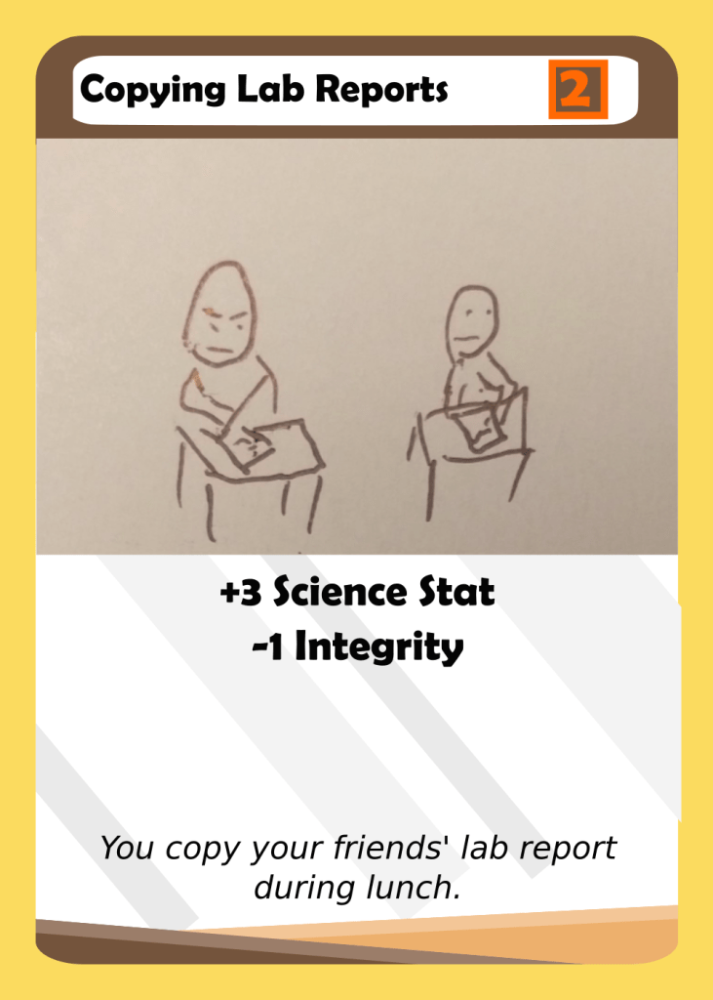This card was buffed to make the Science stat increase from +1 to +3. I think that this card was always a little underwhelming since losing an Integrity is a pretty significant cost for a card only worth 2 actions and a Science stat. This change makes the card a lot stronger, but also without the same flexibility of a card worth 5 action points.
Doubts
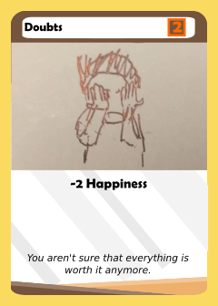 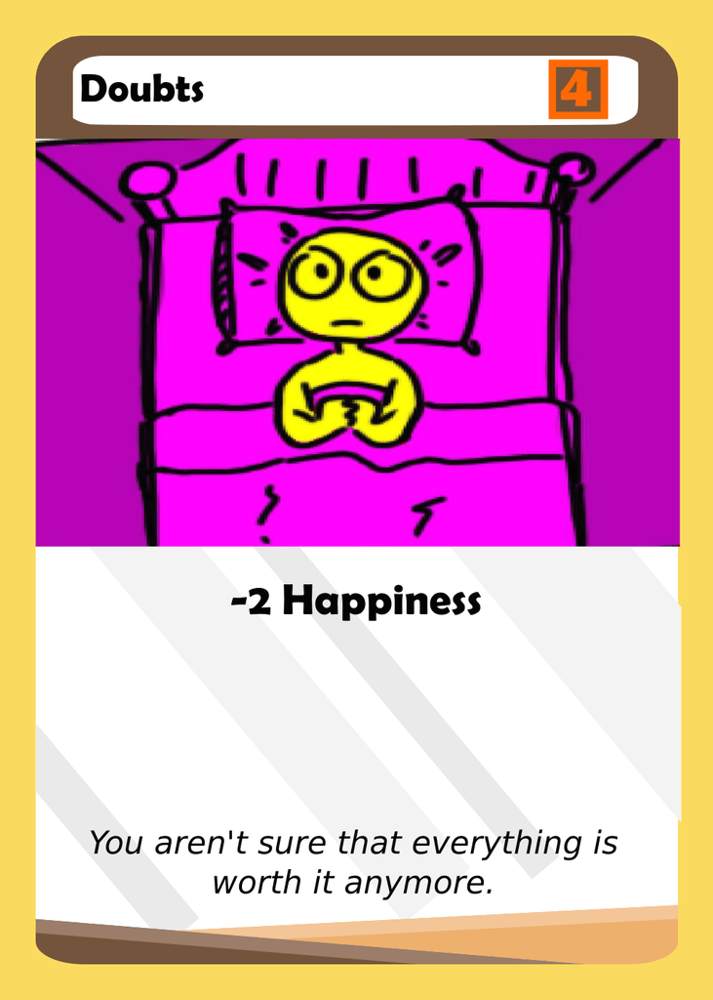Doubts was always a terrible card, giving only 2 Action Points for a cost of 2 Happiness. One Happiness is roughly worth one Action Point because you can use Hesling to convert chats to Happiness, and so counting that way this card was basically worthless. Post buffs, there are only 5 cards in the Sophomore deck worth 4 Action points, so it is indeed much more playable now.
A note about worthless cards. Before, my thought on them was that “bad cards” should exist in order to encourage players to use the Graff ability, or use cards as discard fodder. However, I think that while cards should vary in quality, it is also important to make sure that cards give some benefit in order to create more difficult decisions. If there are cards that are just objectively terrible, then the choice between using the card and trading it away is lost.
Progress Reports
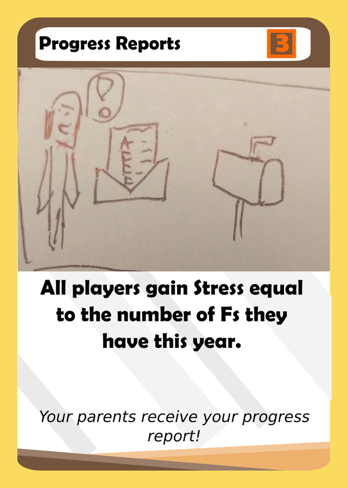While this card does attack other players, I’ve found that it is difficult to get significant value out of this card. If you wait to play it until you have corrected a few of your classes to As, chances are, other players have caught up too. Playing it immediately is also tough since it basically just gives all players 4 Stress. Thus, I think that this card seems better than it really is and deserved a small buff.
Offensive Social Media Post
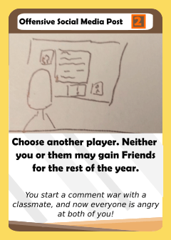This card was buffed to 3. While it can hurt another player a lot, it also hurts to play it. A small buff makes it a bit better.
Start Some Clubs
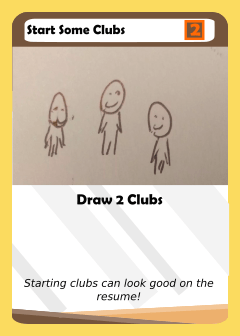 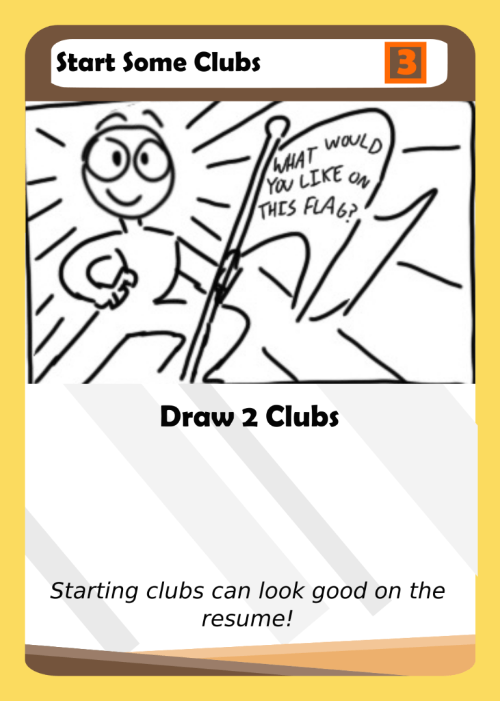This card doesn’t help players who don’t have a lot of Friends to then invest in clubs, and can actually end up helping other players. It was in needing of a buff because of this.
Final Exams
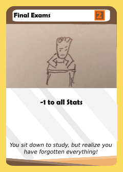 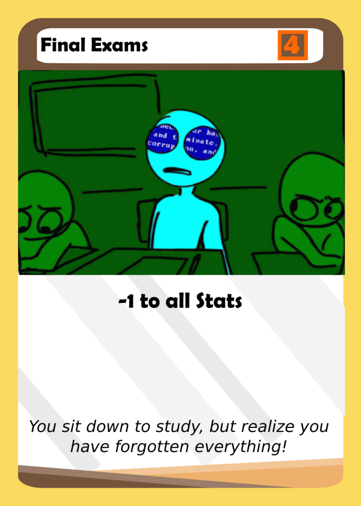The logic behind Final Exams was that you would only play it when you didn’t have any Stats. However, not only is this a very high restriction, but the benefit from playing it was just two action points- not much at all. By increasing the action value, it now becomes a lot more interesting as a card as it requires some planning to get the best use out of it.
Setting the Curve


I really enjoyed creating this card since it has a pretty unique effect. However, I think it ended up seeming a lot better than it actually was. Most players won’t have 3 Stats laying around anyway, and having an A in a class no one else has an A in is somewhat difficult to pull off. By making it worth 2, it isn’t an absolutely terrible card to play if the condition is not met, but at the same time be very powerful in the right circumstance.
Shadow Students
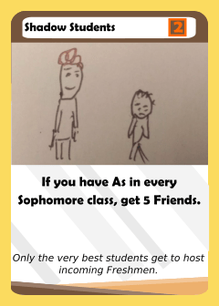 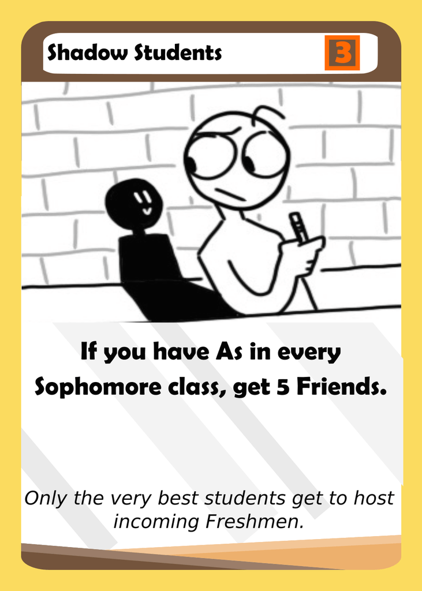Having an A in every Sophomore class is incredibly rare and requires set up from Freshman year as well as a strong hand Sophomore year. I don’t think the effect has ever been successfully been pulled off, so buffing the action point value seems natural.
Posting Flyers


You may remember this card from the last adjusting cards post I made. Well, it still is problematic, giving one player a high chance to gain resume points and then go on to have a strong turn. I think that at 1 action point it becomes a lot less overpowered and fair. It is still a great card to play as the effect is among the strongest in the game.
That’s all for now! Let me know what you think, and make sure to leave a comment or subscribe if you enjoy this content by supplying your email to the widget found on the sidebar!